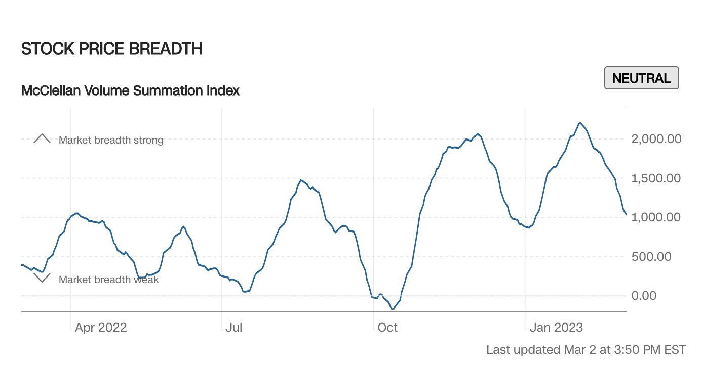

Project Introduction
Introduction
Predicting the future of stock market might be the most tempting task for all traders, as a result, many tools are developed in order to provide a valid prediction of the future of the major index such as the Dows, Nasdaq Index or the S&P 500, one of the measurement that many people use is the market breadth.
The market is made up of thousands of stocks. And on any given day, investors are actively buying and selling them. This measure looks at the amount, or volume, of shares on the NYSE that are rising compared to the number of shares that are falling. A low (or even negative) number is a bearish sign.
–CNN Business

Project Description
In this project, I will create my own version of market breadth thats different from the CNN version and make it more sensitive to price change everday. And there will be two major question for me to analysis:
- What is the relationship between stock market breadth and overall market performance?
- Can stock market breadth be used as a leading indicator for future market trends?
More Data science question
- What is the relationship between stock market breadth and overall market performance?
- Can stock market breadth be used as a leading indicator for future market trends?
- What are the effects of macroeconomic events, such as recessions, on stock market breadth?
- How accurate is the market breadth as an indicator of the market future?
- What role does sentiment play in the relationship between stock market breadth and market performance?
- Can stock market breadth be used to identify overbought or oversold market conditions?
- Does extreme market breath always means the turn in the stock market?
- How do sector-specific market breadth indices compare to overall market breadth indices?
- How does the use of different breadth measures, such as advance-decline ratio or new highs-new lows, impact the relationship between stock market breadth and market performance?
- What else could use as an indicator for the market trend?